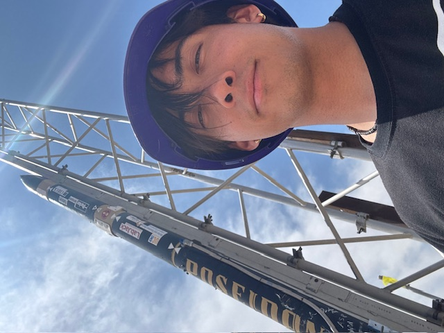
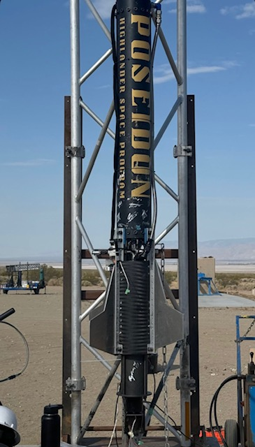
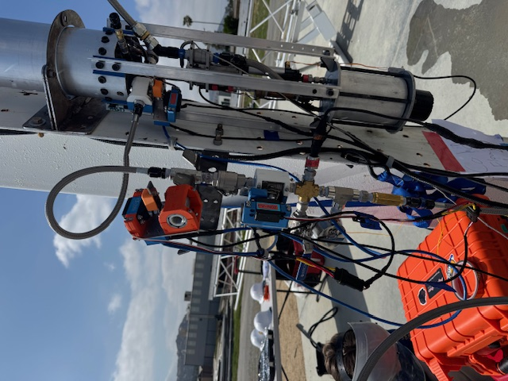
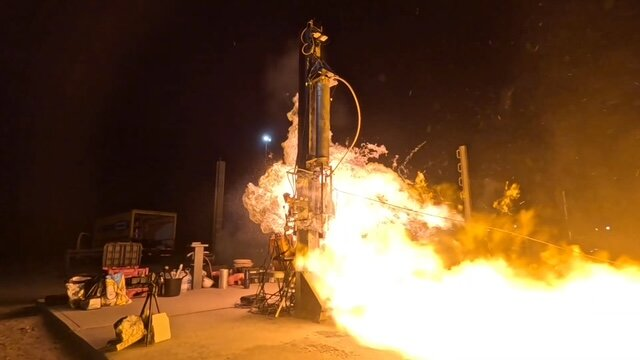
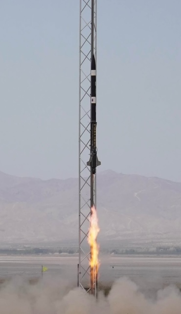

Project Poseidon
N₂O / Ethanol Liquid Bipropellant Rocket
- Role
- Lead Fluid Systems Engineer
- Organization
- Highlander Space Program, UC Riverside
- Period
- 2025 - 2026
- Tag
- FS-02

- Competition result
- 1st place, Most Efficient Liquid Engine
- Event
- 2025 FAR-OUT Advanced Propulsion Rocketry Competition
- Flight altitude
- 7,340 ft
The problem
Poseidon was UC Riverside's first liquid bipropellant rocket. Nothing existed to inherit: no prior feed system, no validated pressure vessel, no established test procedure. As Lead Fluid Systems Engineer I built the pressure vessel and the integrated fuel and oxidizer feed system, and validated them through the test campaign.
Constraints
- First of its kind for the program. No internal heritage hardware or prior data to design against.
- Competition deadline. A fixed date that testing had to be complete before.
- Student budget and shop access. Design had to be manufacturable with the machining and assembly capability actually available to us.
- Safety margin on a pressurized structure with people standing near it.
Design decisions
Why nitrous oxide simplified the pressurization problem
N₂O is self-pressurizing. At room temperature its vapor pressure sits near 700 to 750 psi, so the propellant supplies its own tank pressure without a separate pressurant system. For a first liquid vehicle this removed an entire subsystem and let the team concentrate on the engine, the structure, and the feed path.
The tradeoff is that vapor pressure is strongly temperature dependent, so tank pressure, and therefore engine performance, varies with ambient conditions on test day. That sensitivity is the reason our next vehicle moved to a separately pressurized architecture, which became Project Clementine.
Sizing the pressure vessel
The vessel was analyzed as a thin-walled cylinder, valid where the radius to thickness ratio is greater than about 10. Under internal pressure the wall carries a hoop stress and an axial stress,
Hoop stress is twice axial stress, so the hoop direction governs and sets the required wall thickness,
Design pressure was set from the maximum expected operating pressure with margin applied above it, rather than from nominal operating pressure, so that the structure is sized for the worst credible case rather than the intended one. The combined stress state was checked against yield using the von Mises criterion,
Material selection traded strength to weight against weldability and oxidizer compatibility, and the geometry was iterated in CAD against what the shop could actually produce and inspect.
Designing the feed path
The feed system had to deliver both propellants to the engine at the correct flow and pressure, sequence safely through fill and fire, and seal reliably. Line and orifice sizing followed the same incompressible relations used across the program,
with major and minor losses accumulated along each run to confirm the engine saw its design inlet condition rather than whatever the plumbing happened to deliver.
What I built
The pressure vessel, which I built and fabricated, coordinating with manufacturing until it was real hardware. Then the integrated fuel and oxidizer feed system, assembling and validating the feed lines, valves, and interfaces that connected tanks to engine.
Validation
Testing followed a deliberate ladder, each step qualifying the next:
- Leak and pressure checks on the assembled system, to prove sealing before introducing propellant.
- Cold flow testing, flowing propellant through the complete feed path without combustion. This validates flow rates, sequencing, and valve behavior while the consequences of being wrong are still small.
- Static fire, running the full engine with the vehicle restrained, to confirm the feed system delivered propellant correctly under real operating and thermal conditions.
- Flight.
The vehicle earned first place for Most Efficient Liquid Engine at the 2025 FAR-OUT Advanced Propulsion Rocketry Competition and reached 7,340 feet.
The pressure vessel that flew was drilled the night before the hot fire using a jig I designed and manufactured on the spot. That story is written up separately in Bulkhead Drill Jig.
What I would do differently
I would instrument more heavily. We proved the system worked, but with more transducers across the feed path we would have had a far richer picture of how it worked, and a dataset to design the next vehicle against instead of starting Clementine's numbers from first principles again. The instrumentation density on Clementine is a direct response to this.




- Pressure vessel design
- Structural analysis
- Feed system integration
- Cold flow and static fire testing
- Design for manufacture